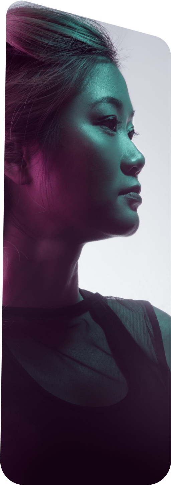
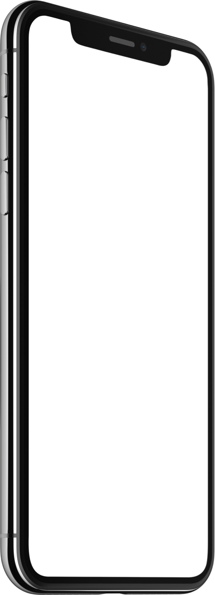

The most important part of the Startup Framework is the samples. The samples form a set of 25 usable pages you can use as is or you can add new blocks from UI Kit.
Let’s make design fast and easy
Startup 3
 
Get Started